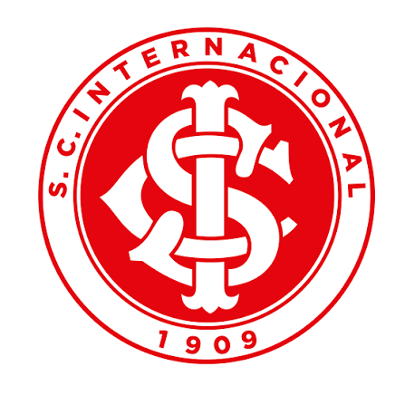
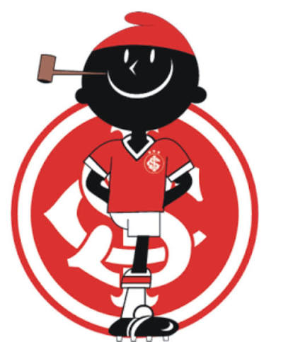

Fundação: 4 de abril de 1909
Fundado pelos irmãos Henrique, José Eduardo e Luiz Poppe, o Sport Club Internacional nasceu com um propósito democrático: ser um clube aberto a todas as nacionalidades e classes sociais, o que lhe rendeu rapidamente a eterna alcunha de "O Clube do Povo". Joga no imponente Estádio Beira-Rio, erguido sobre as águas do Guaíba com a ajuda de seus próprios torcedores.
O Colorado marcou época nos anos 70 com craques como Falcão e Figueroa, alcançando o feito de ser o único time na história a vencer o Campeonato Brasileiro de forma invicta, em 1979. A coroação mundial veio em 2006, sob a liderança de Fernandão, quando o Inter chocou o planeta ao derrotar o lendário Barcelona de Ronaldinho Gaúcho no Mundial de Clubes da FIFA.